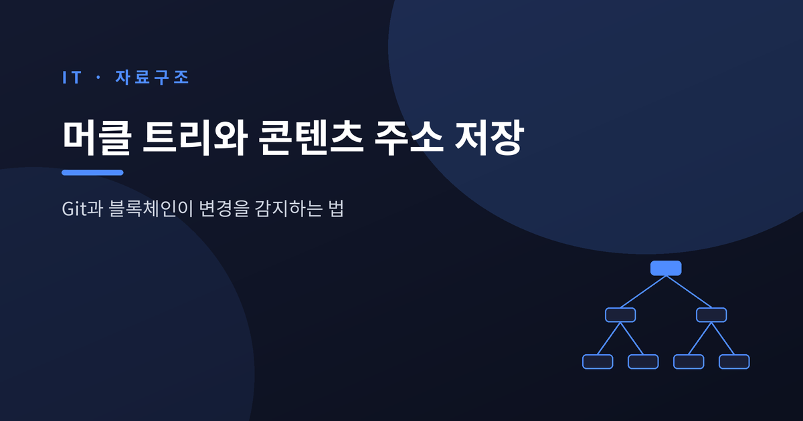
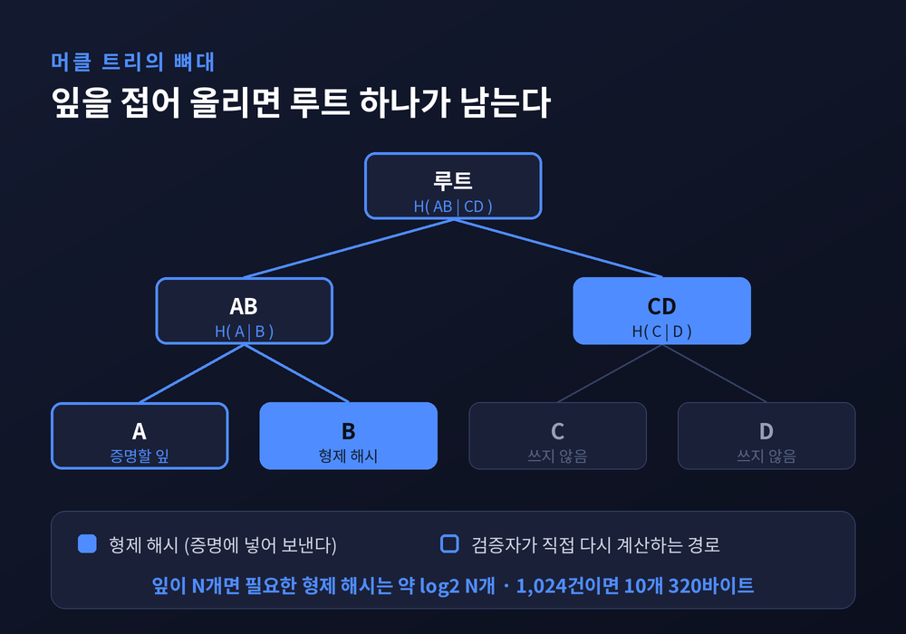
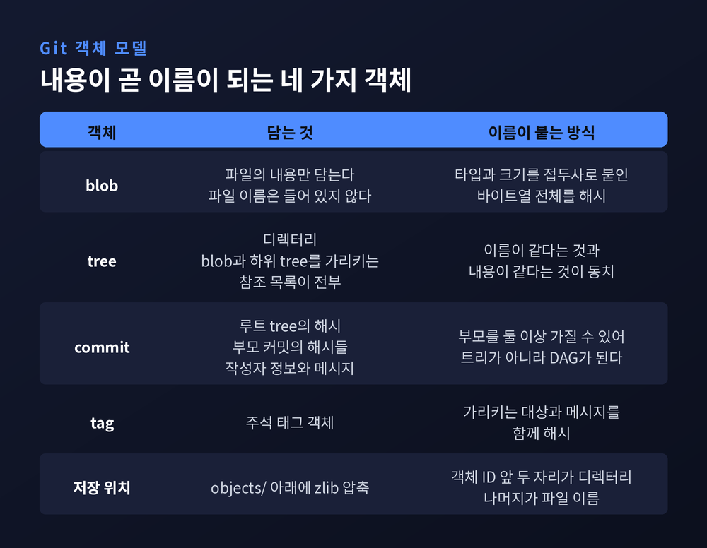
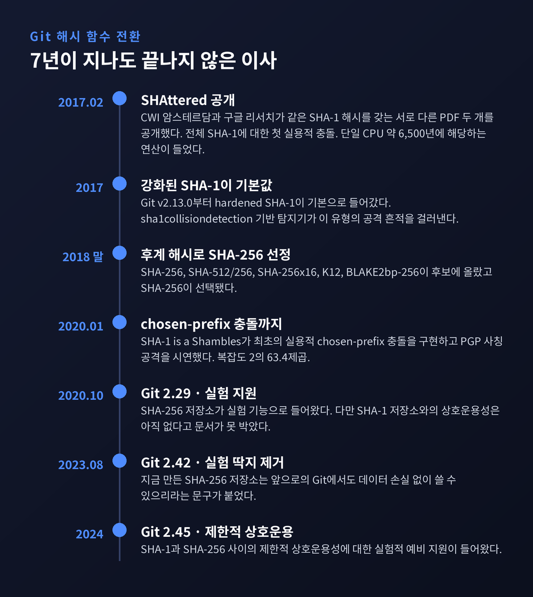
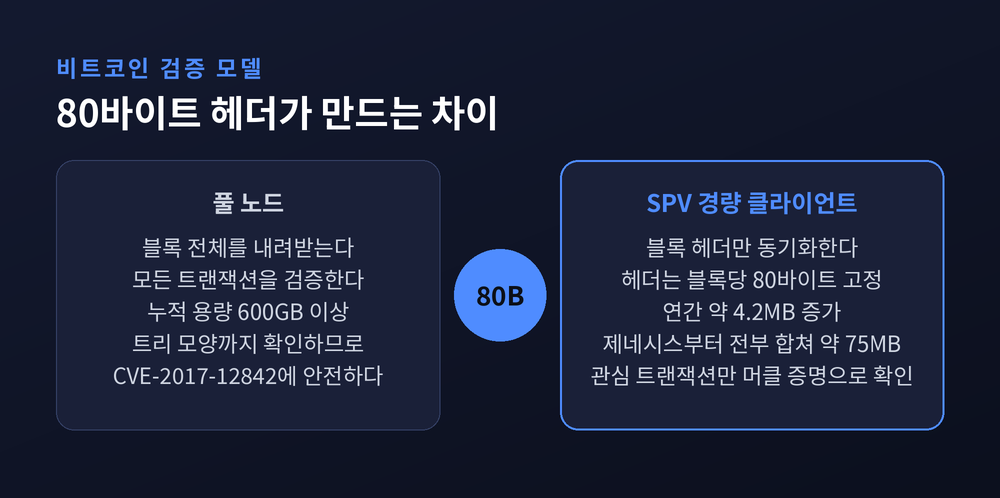
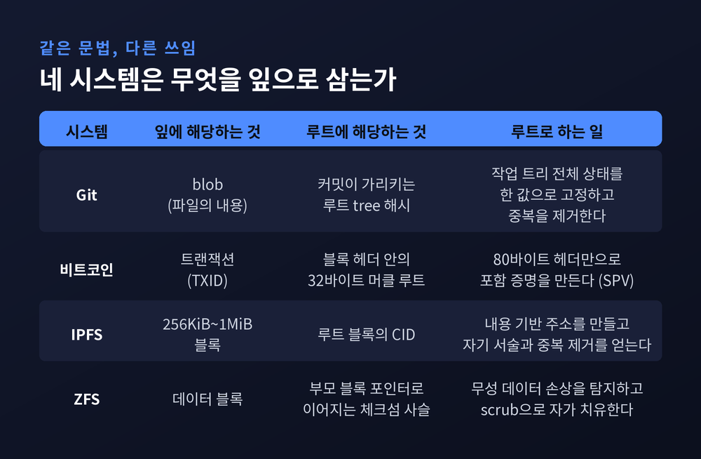
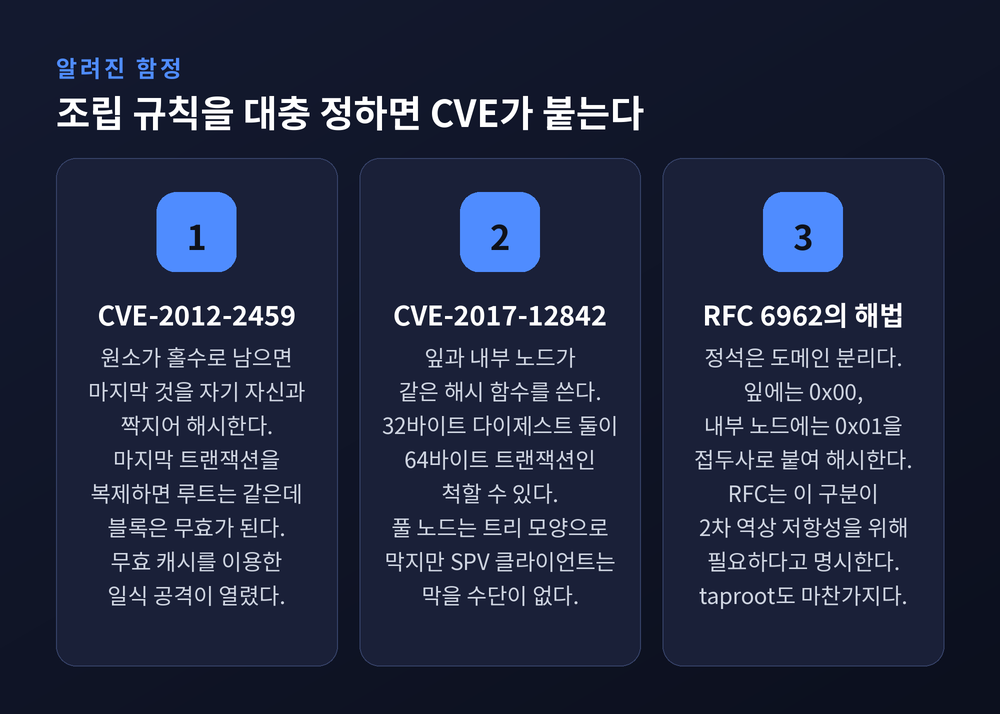

머클 트리와 콘텐츠 주소 저장 — Git과 블록체인이 변경을 감지하는 법
이번 글에서는 머클 트리와 콘텐츠 주소 저장을 정리해 보겠습니다. Git이 수만 개 파일 중 무엇이 바뀌었는지 순식간에 알아내는 이유, 비트코인 지갑이 600GB짜리 블록체인 없이도 입금을 확인하는 이유가 같은 자료구조에서 나옵니다. 1979년에 출원된 특허 하나가 그 출발점입니다.

세 줄 요약
- 데이터를 쪼개 해시하고 그 해시를 다시 해시해 루트 값 하나로 접는 구조입니다. 루트만 비교하면 전체가 같은지 다른지 판정됩니다.
- 특정 항목이 포함됐다는 증명에는 형제 해시 약 log₂N개만 필요합니다. 항목이 백만 개여도 스무 개 남짓이면 끝납니다.
- Git·비트코인·IPFS·ZFS가 모두 이 문법을 씁니다. 다만 조립 방식을 틀리면 무너집니다. 비트코인은 그 대가를 CVE 두 개로 치렀습니다.
하나의 값으로 전부를 인증한다는 발상
랠프 C. 머클은 1979년 9월 5일 미국 특허를 출원했습니다.
번호는 4,309,569, 제목은 "Method of providing digital signatures"입니다.
등록은 1982년 1월 5일이었고, 출원인은 스탠퍼드 대학 이사회였습니다.
특허 초록의 표현이 흥미롭습니다.
비밀 수의 일방향 함수에 대한 인증 트리(authentication tree) 함수를 사용한다고 적혀 있습니다.
처음부터 목적이 변경 감지가 아니었습니다.
짧은 값 하나로 대량의 항목을 인증하는 것이 목표였습니다.
같은 해 머클의 스탠퍼드 박사학위 논문 "Secrecy, Authentication, and Public Key Systems"가 이 개념의 토대를 놓았습니다.
정식 출판 시점을 두고는 자료마다 설명이 갈립니다. 1987년 논문을 드는 쪽이 있고, 1989년 발표를 드는 쪽도 있습니다.
확정된 사실은 출원 연도 하나입니다.
특허는 2002년에 만료됐습니다. 그 뒤로 이 자료구조는 발명자의 이름을 따 머클 트리로 불립니다.
해시를 다시 해시한다
구조는 단순합니다.
잎(leaf) 노드는 데이터 블록의 해시입니다.
내부 노드는 자식 둘의 해시를 이어 붙여 다시 해시한 값입니다.
이 과정을 반복하면 꼭대기에 값 하나가 남습니다. 머클 루트입니다.
A, B, C, D 네 개라면 이렇게 접힙니다.
AB는 A와 B를 묶어 해시한 값, CD는 C와 D를 묶어 해시한 값, 루트는 AB와 CD를 묶어 해시한 값입니다.
여기서 두 가지 성질이 나옵니다.
첫째, 잎이 하나라도 바뀌면 그 잎에서 루트까지 이르는 경로의 해시가 전부 바뀝니다. 루트만 비교하면 됩니다.
둘째, 특정 잎이 루트에 포함됐음을 증명하려면 올라가는 길목의 형제 해시만 있으면 됩니다.
잎이 N개인 이진 트리의 깊이는 log₂N입니다.
그래서 증명 크기가 O(log n)으로 늘어납니다.
비트코인 해시는 32바이트입니다.
트랜잭션 1,024건짜리 블록이라면 형제 해시 10개, 약 320바이트면 충분합니다.
4,096건으로 네 배가 늘어도 12개, 약 384바이트입니다.
데이터가 네 배가 되는 동안 증명은 64바이트만 늘어납니다.

Git — 주소가 곧 내용의 지문
Git은 스스로를 콘텐츠 주소 지정 파일시스템(content-addressable filesystem)이라 부릅니다.
파일 이름이 아니라 내용의 해시가 주소입니다.
객체는 네 가지입니다.
blob은 파일의 내용만 담습니다. 파일 이름은 들어 있지 않습니다.
tree는 디렉터리입니다. blob과 다른 tree를 가리키는 참조 목록이 전부입니다.
commit은 루트 tree의 해시, 부모 커밋의 해시들, 작성자 정보, 메시지를 담습니다.
tag는 주석 태그 객체입니다.
저장 방식도 명확합니다.
느슨한 객체(loose object)는 <타입> <크기> 다음에 널 바이트를 두고 실제 데이터를 붙인 뒤 zlib으로 압축합니다.
객체 ID는 압축 전, 접두사를 포함한 바이트열의 해시입니다.
내용이 what is up, doc?인 16바이트 blob이라면 blob 16과 널 바이트, 그리고 본문을 이어 붙인 값을 해시하는 셈입니다.
파일은 objects/ 아래 저장되는데요. 객체 ID의 앞 두 자리가 디렉터리 이름이 되고 나머지가 파일 이름이 됩니다.
이 접두사는 부수 효과도 냅니다.
Git 공식 전환 문서는 데이터 앞에 타입과 길이 필드를 붙이는 관행이 충돌 공격을 훨씬 어렵게 만드는 경향이 있다고 적었습니다.
실무 효과는 중복 제거입니다.
내용이 바뀌지 않은 파일과 디렉터리는 여러 커밋에 걸쳐 같은 객체를 그대로 재사용합니다.
두 tree의 이름이 같다는 것과 내용이 같다는 것은 필요충분조건입니다.
커밋을 백 개 쌓아도 안 바뀐 파일은 저장소에 한 벌만 존재합니다.
커밋이란 결국 그 시점의 루트 tree 해시를 가리키는 포인터에 가깝습니다.

엄밀히 말하면 트리가 아닙니다
Git을 머클 트리라고 부르는 설명이 많습니다.
정확히는 머클 DAG입니다. 해시 트리와 방향성 비순환 그래프를 합친 구조입니다.
트리가 아닌 이유는 두 가지입니다.
머지 커밋은 부모를 둘 이상 가집니다. 트리의 부모 하나 규칙이 깨집니다.
서로 다른 tree가 같은 blob을 공유합니다. 자식 하나를 여러 부모가 참조합니다.
브랜치와 머지를 표현하려면 트리로는 부족합니다.
IPFS가 같은 이유로 같은 선택을 했습니다.
SHA-1에서 SHA-256으로, 아직 진행 중인 이사
2017년 2월 23일 SHAttered가 발표됐습니다.
CWI 암스테르담 암호학 그룹과 구글 리서치가 같은 SHA-1 해시를 갖는 서로 다른 PDF 두 개를 공개했습니다.
전체 SHA-1에 대한 실용적이고 공개적인 충돌로는 처음이었습니다.
비용은 9,223,372,036,854,775,808회가 넘는 SHA-1 연산이었습니다.
단일 CPU로 약 6,500년, 단일 GPU로 약 110년에 해당합니다.
큰 숫자입니다만, 생일 역설에 기댄 무차별 대입보다 약 10만 배 빠릅니다.
Git의 대응은 빨랐습니다.
v2.13.0부터 강화된(hardened) SHA-1 구현이 기본값이 되었습니다.
발표 며칠 만에 sha1collisiondetection 라이브러리 기반 탐지기를 내장해, 이 유형의 공격 흔적이 있는 입력을 걸러냅니다.
SHAttered 자체는 막았습니다. 다만 SHA-1이 약하다는 사실은 그대로였습니다.
2020년에는 한 걸음 더 나갔습니다.
Leurent와 Peyrin이 USENIX Security에서 발표한 "SHA-1 is a Shambles"가 SHA-1에 대한 최초의 실용적 chosen-prefix 충돌을 구현했습니다.
PGP와 GnuPG 사칭 공격까지 시연했습니다.
GTX 970 기준으로 chosen-prefix 충돌 복잡도를 2의 63.4제곱까지 낮췄고, 비용 평가에는 GTX 1060 한 대를 월 35달러에 빌린다는 가정을 썼습니다.
후계 해시 후보로는 SHA-256, SHA-512/256, SHA-256x16, K12, BLAKE2bp-256이 올랐습니다.
2018년 말 Git 프로젝트는 SHA-256을 택했습니다.
전환 문서는 요구사항을 이렇게 정리합니다. 충돌 저항성과 2차 역상 저항성은 필요하지만, 길이 확장 저항성은 필요하지 않다.
일정은 생각보다 깁니다.
2020년 10월 Git 2.29에서 SHA-256 저장소가 실험 기능으로 들어왔습니다. 당시 문서는 SHA-1 저장소와의 상호운용성이 아직 없다고 못 박았습니다.
2023년 8월 Git 2.42에서 실험적 호기심이라는 딱지를 뗐습니다. 지금 만든 SHA-256 저장소는 앞으로의 Git에서도 데이터 손실 없이 쓸 수 있으리라는 문구가 붙었습니다.
2024년 Git 2.45에서 두 해시 사이의 제한적 상호운용성에 대한 실험적 예비 지원이 들어왔습니다.
첫 충돌 발표로부터 7년입니다. 그리고 아직 끝나지 않았습니다.

비트코인 — 80바이트가 붙잡는 것
비트코인 블록 헤더는 정확히 80바이트입니다.
version 4바이트, 직전 블록 헤더 해시 32바이트, 머클 루트 32바이트, timestamp 4바이트, nBits 4바이트, nonce 4바이트로 끝입니다.
이 가운데 머클 루트 32바이트가 블록의 트랜잭션 전체에 커밋합니다.
트랜잭션이 1건이든 3,000건이든 헤더는 80바이트로 고정입니다.
SPV(Simplified Payment Verification)는 이 성질 위에 서 있습니다.
경량 클라이언트는 블록체인 전체 상태를 저장하지 않습니다.
블록 헤더와 머클 루트만 동기화한 뒤, 머클 증명으로 특정 트랜잭션의 포함 여부를 확인합니다.
각 헤더가 직전 헤더의 해시를 참조하는지 확인해 제네시스 블록까지 끊기지 않는 사슬을 세웁니다.
용량 차이가 이 설계의 값어치를 보여줍니다.
블록당 80바이트, 연간 약 52,560블록이면 헤더 사슬은 한 해에 약 4.2MB 늘어납니다.
2009년 제네시스 블록 이후 전체 헤더 사슬은 약 75MB입니다.
같은 기간 풀 블록체인은 600GB를 넘었습니다.
예전엔 지갑 하나 쓰려고 노드 전체를 내려받아야 했습니다.
지금은 스마트폰이 75MB로 같은 질문에 답합니다.

IPFS의 CID — 조심해야 할 오해 하나
IPFS의 CID(Content Identifier)는 자료가 어디에 있는지가 아니라 내용 자체에 기반한 주소입니다.
내용이 조금이라도 다르면 CID가 달라집니다.
같은 내용을 같은 설정으로 서로 다른 노드에 올리면 같은 CID가 나옵니다.
기본 해시 알고리즘은 sha-256입니다.
CID는 자기 서술적입니다. 세 가지 multiformat을 조합합니다.
multihash는 어떤 해시 알고리즘을 썼는지 알려줍니다.
multicodec은 가져온 내용을 어떻게 해석해야 하는지 알려줍니다.
multibase는 문자열로 인코딩할 때 어떤 진법을 썼는지 알려줍니다.
여기서 가장 많이 걸리는 함정이 있습니다.
CID는 파일 해시가 아닙니다.
IPFS는 파일을 보통 256KiB에서 1MiB 크기의 블록으로 쪼개고, DAG로 구조화하고, codec으로 감쌉니다.
CID 안의 multihash는 루트 블록의 해시이지 파일 바이트의 해시가 아닙니다.
공식 문서의 예시가 분명합니다.
2.59GiB짜리 ubuntu-20.04.1-desktop-amd64.iso의 공식 SHA-256 체크섬은 b45165ed로 시작합니다.
그런데 ipfs add 후 얻은 CID QmPK1s3pNY... 안의 다이제스트는 0E7071C5로 시작합니다.
두 값은 일치하지 않습니다. raw codec을 쓰면서 파일이 블록 하나에 들어갈 때만 같아집니다.
같은 파일이 다른 CID를 갖는 일도 생깁니다.
청크 크기, DAG 레이아웃, codec, CID 버전, 해시 알고리즘이 모두 결과를 바꿉니다.
결함이 아니라 용도별 최적화입니다. balanced DAG는 대용량 영상의 랜덤 접근에 유리하고, trickle DAG는 로그처럼 순차적으로 덧붙는 데이터에 맞습니다.
버전 구분은 눈으로도 됩니다.
46자이고 Qm으로 시작하면 CIDv0입니다.
CIDv1은 multibase 접두사와 버전 식별자, multicodec 식별자를 앞에 달고, 기본 표현은 대소문자를 가리지 않는 base32입니다.
v1을 v0로 되돌리는 것은 codec이 dag-pb일 때만 가능합니다.
파일시스템과 분산 DB도 같은 문법을 씁니다
ZFS는 해시 트리 구조로 설계되어 있습니다.
각 부모 블록은 자식들의 블록 포인터를 담고, 각 블록 포인터는 자신이 가리키는 블록의 체크섬을 담습니다.
ZFS와 Btrfs, APFS 모두 블록의 체크섬을 부모 메타데이터 블록에 저장합니다.
데이터와 검증값을 떼어 놓는 것이 요점입니다.
그래서 하위 데이터가 손상되면 상위 체크섬 검증이 반드시 실패합니다.
손상이 조용히 숨을 자리가 없습니다.
OpenZFS는 모든 데이터와 메타데이터 블록의 체크섬을 계산하고 읽을 때마다 검증합니다.
대다수 파일시스템은 저장 장치가 오류를 보고하지 않으면 올바른 데이터를 돌려줬으리라 가정합니다.
ZFS는 검증할 수 없는 것을 신뢰하지 않습니다.
scrub은 풀의 모든 블록을 저장된 체크섬과 대조해 손상을 찾아내고 복구하는 정기 점검입니다.
분산 데이터베이스도 같은 도구를 씁니다.
아마존 Dynamo는 복제본 동기화에 안티 엔트로피 프로토콜을 쓰고, 전송량을 줄이기 위해 머클 트리를 사용합니다.
두 복제본의 루트 해시가 같으면 동기화할 것이 없습니다.
다르면 자식들의 해시를 주고받으며 실제로 어긋난 잎까지 내려갑니다.
Cassandra는 여기에 부분 범위 복구와 증분 복구를 더했고, 안티 엔트로피 자체는 nodetool repair 같은 수동 요청 시에만 씁니다.

그냥 쓰면 안전하지 않습니다
이 자료구조를 안전한 부품으로만 여기면 곤란합니다.
비트코인은 그 대가를 두 번 치렀습니다.
첫째는 CVE-2012-2459입니다.
비트코인은 원소가 홀수로 남으면 마지막 것을 자기 자신과 짝지어 해시합니다.
이 방식 때문에 서로 다른 트랜잭션 나열이 같은 루트를 만들 수 있습니다.
공격자가 유효한 블록의 마지막 트랜잭션을 한 번 더 복제하면, 루트는 같은데 이중 지불로 무효인 블록이 만들어집니다.
Bitcoin Core는 대역폭과 CPU를 아끼려고 무효로 판명된 블록의 헤더 해시를 캐시합니다.
무효 형태를 먼저 본 노드는 어떤 피어가 보내오는 유효한 형태도 거부하게 됩니다. 캐시는 노드를 재시작해야 비워집니다.
공격자는 이것으로 특정 노드를 일식 공격(eclipse attack)할 수 있었습니다.
2012년 신고됐고, CVE가 부여됐고, 악용 없이 조용히 고쳐졌습니다.
문제는 그다음입니다. 변형이 0.13.0(2016)에서 되살아나 0.14.0(2017)에서 다시 고쳐졌고, 2023년에 또 다른 변형이 발견됐습니다. 재발 방지를 위한 리팩터링은 2024년 초에 들어갔습니다.
둘째는 CVE-2017-12842입니다.
잎 노드와 내부 노드에 같은 해시 알고리즘을 쓴 것이 원인입니다.
잎은 트랜잭션을 두 번 해시한 값이고, 내부 노드는 32바이트 다이제스트 두 개를 이어 붙여 두 번 해시한 값입니다.
그래서 다이제스트 두 개가 64바이트 트랜잭션인 척할 수 있습니다. 반대 방향도 가능합니다.
풀 노드는 안전합니다. P2P 메시지에 트랜잭션 개수 필드가 있고, 그 개수가 트리의 모양을 결정하므로 모양이 어긋난 트리는 무효로 걸러집니다.
그러나 SPV 클라이언트는 모든 트랜잭션을 검증하지 않습니다. 헤더의 루트가 관심 트랜잭션에 커밋하는지만 봅니다.
비싸긴 해도 계산적으로 가능한 공격이 여기서 열립니다.
정석 해법은 이미 나와 있습니다. 도메인 분리입니다.
Certificate Transparency를 규정한 RFC 6962는 잎과 내부 노드를 접두사로 구분합니다.
잎은 0x00을 앞에 붙여 해시하고, 내부 노드는 0x01을 앞에 붙여 해시합니다.
RFC는 이 구분이 2차 역상 저항성을 얻기 위해 필요하다고 명시합니다.
비트코인의 taproot 소프트포크도 불균형 트리 처리 규칙을 바꾸고, 트리의 부분마다 조금씩 다른 다이제스트 알고리즘을 써서 같은 위험을 줄였습니다.

정리하면 이렇습니다.
Git도, 비트코인도, IPFS도, ZFS도 결국 같은 문법을 씁니다.
데이터를 쪼개 해시하고, 해시를 다시 해시해 하나로 접습니다. 그 값 하나를 지키면 아래 전부가 지켜집니다.
다른 것은 무엇을 잎으로 삼느냐, 트리냐 DAG냐, 루트를 어디에 두느냐뿐입니다.
물론 만능은 아닙니다.
해시 함수가 늙으면 갈아 끼워야 하고, 그 이사에는 Git이 보여준 것처럼 7년이 넘게 걸립니다.
조립 규칙을 대충 정하면 CVE가 붙습니다.
"머클 트리는 해시가 안전해도 조립이 틀리면 무너집니다."
그래도 이만한 도구는 흔치 않다고 생각합니다. 32바이트짜리 값 하나로 600GB를 대신할 수 있느냐고 물으신다면, 망설임 없이 그렇다고 답하겠습니다.